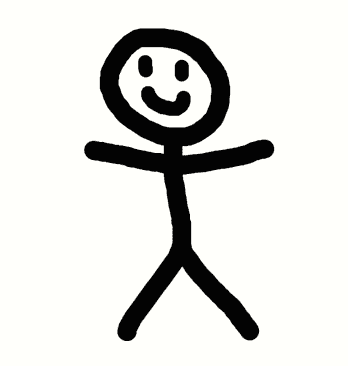

Alessandro Acchini
Étudiant BTS SIOPassionné par le développement web et les nouvelles technologies, j'aime apprendre, relever des défis et créer des projets innovants.
Sur ce portfolio, vous trouverez mes réalisations, mes compétences et mes certifications. N'hésitez pas à me contacter pour toute collaboration ou opportunité professionnelle !
Télécharger mon CVBTS SIO
Formation actuelle
5+
Expériences pro
3
Certifications